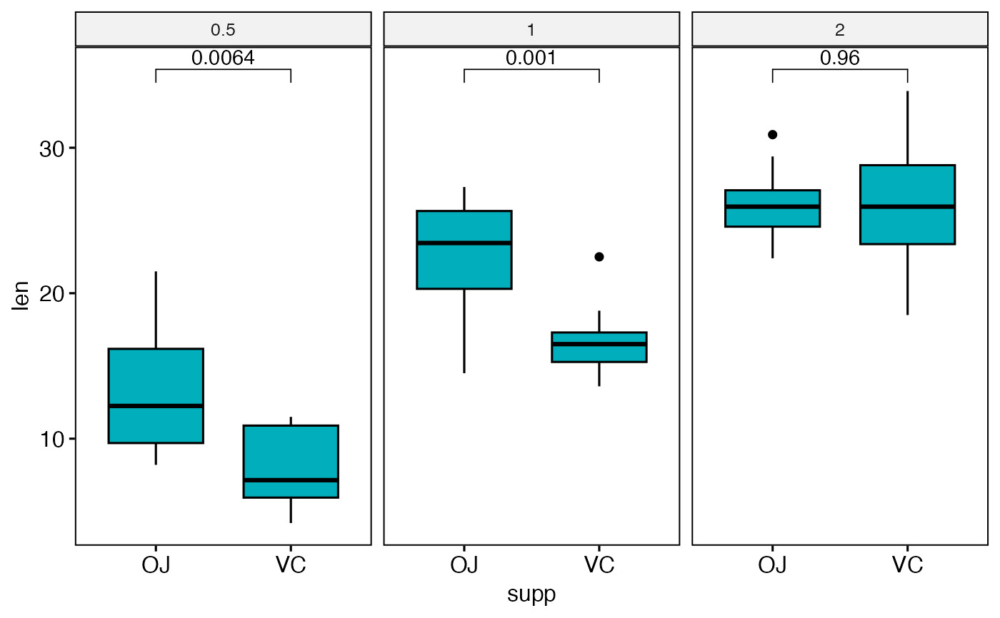
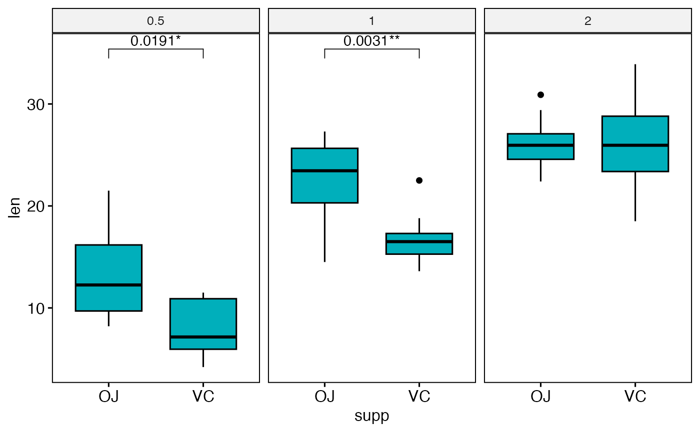
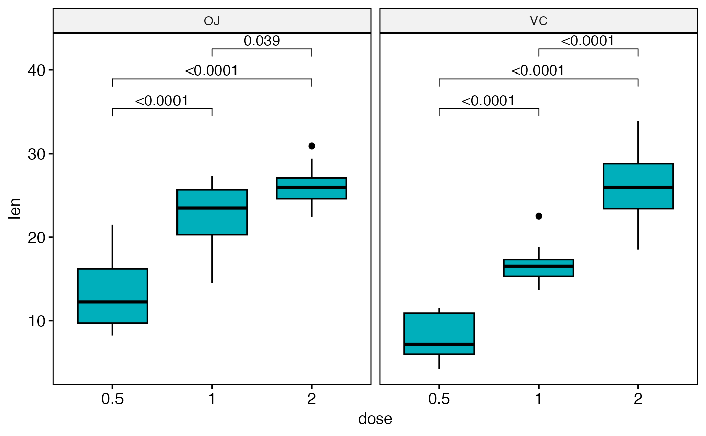
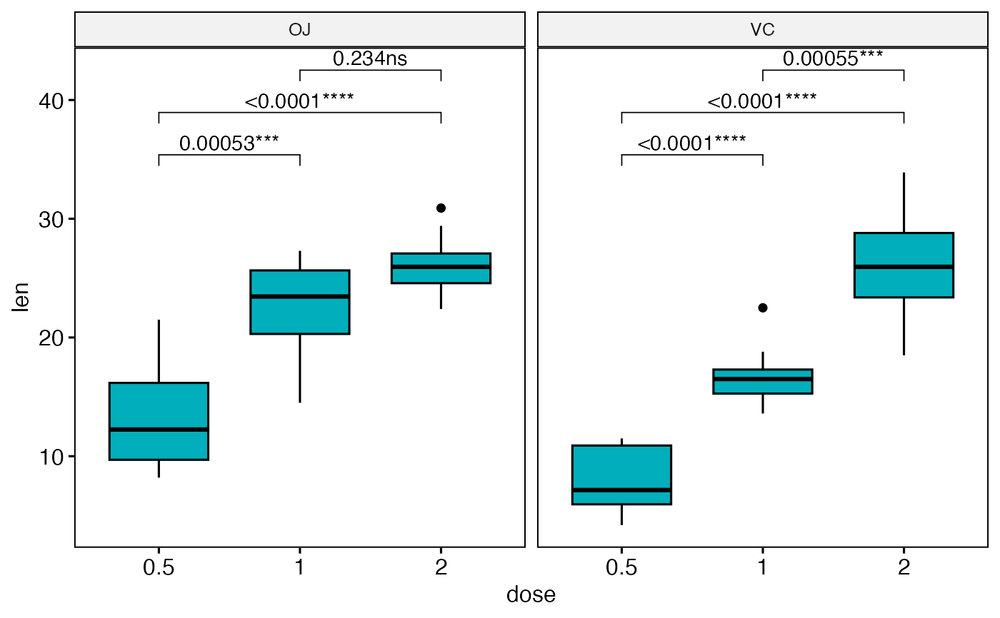

Adjust p-values produced by geom_pwc() on a ggplot.
This is mainly useful when using facet, where p-values are generally
computed and adjusted by panel without taking into account the other panels.
In this case, one might want to adjust after the p-values of all panels together.
Usage
ggadjust_pvalue(
p,
layer = NULL,
p.adjust.method = "holm",
label = "p.adj",
hide.ns = NULL,
symnum.args = list(),
p.format.style = "default",
p.digits = NULL,
p.leading.zero = NULL,
p.min.threshold = NULL,
p.decimal.mark = NULL,
signif.cutoffs = NULL,
signif.symbols = NULL,
ns.symbol = "ns",
use.four.stars = FALSE,
output = c("plot", "stat_test")
)Arguments
- p
a ggplot
- layer
An integer indicating the statistical layer rank in the ggplot (in the order added to the plot).
- p.adjust.method
method for adjusting p values (see
p.adjust). Has impact only in a situation, where multiple pairwise tests are performed; or when there are multiple grouping variables. Ignored when the specified method is"tukey_hsd"or"games_howell_test"because they come with internal p adjustment method. Allowed values include "holm", "hochberg", "hommel", "bonferroni", "BH", "BY", "fdr", "none". If you don't want to adjust the p value (not recommended), use p.adjust.method = "none".- label
character string specifying label. Can be:
the column containing the label (e.g.:
label = "p"orlabel = "p.adj"), wherepis the p-value. Other possible values are"p.signif", "p.adj.signif", "p.format", "p.format.signif", "p.adj.format".an expression that can be formatted by the
glue()package. For example, when specifyinglabel = "Wilcoxon, p = \{p\}", the expression {p} will be replaced by its value.a combination of plotmath expressions and glue expressions. You may want some of the statistical parameter in italic; for example:
label = "Wilcoxon, italic(p)= {p}"
.
- hide.ns
can be logical value (
TRUEorFALSE) or a character vector ("p.adj"or"p").- symnum.args
a list of arguments to pass to the function
symnumfor symbolic number coding of p-values. For example,symnum.args = list(cutpoints = c(0, 0.0001, 0.001, 0.01, 0.05, Inf), symbols = c("****", "***", "**", "*", "ns")).In other words, we use the following convention for symbols indicating statistical significance:
ns: p > 0.05*: p <= 0.05**: p <= 0.01***: p <= 0.001****: p <= 0.0001
Note: If
signif.cutoffsis provided, it takes precedence oversymnum.args.- p.format.style
character string specifying the p-value formatting style. One of:
"default"(backward compatible, uses scientific notation),"apa"(APA style, no leading zero),"nejm"(NEJM style),"lancet"(Lancet style),"ama"(AMA style),"graphpad"(GraphPad style), or"scientific"(scientific notation for GWAS). Seelist_p_format_stylesfor details.- p.digits
integer specifying the number of decimal places for p-values. If provided, overrides the style default.
- p.leading.zero
logical indicating whether to include leading zero before decimal point (e.g., "0.05" vs ".05"). If provided, overrides the style default.
- p.min.threshold
numeric specifying the minimum p-value to display exactly. Values below this threshold are shown as "< threshold". If provided, overrides the style default.
- p.decimal.mark
character string to use as the decimal mark. If NULL, uses
getOption("OutDec").- signif.cutoffs
numeric vector of p-value cutoffs in descending order for assigning significance symbols. For example,
c(0.10, 0.05, 0.01)means p < 0.10 gets "*", p < 0.05 gets "**", p < 0.01 gets "***". Default is NULL, which uses the package defaults.- signif.symbols
character vector of symbols corresponding to
signif.cutoffs. If NULL, auto-generated as "*", "**", "***" (and "****" ifuse.four.stars = TRUE).- ns.symbol
character string for non-significant results. Default is "ns". Use "" (empty string) to show nothing.
- use.four.stars
logical. If TRUE, allows four stars (****) for the most significant level. Default is FALSE.
- output
character. Possible values are one of
c("plot", "stat_test"). Default is "plot".
Examples
# Data preparation
# :::::::::::::::::::::::::::::::::::::::
df <- ToothGrowth
df$dose <- as.factor(df$dose)
# Add a random grouping variable
df$group <- factor(rep(c("grp1", "grp2"), 30))
head(df, 3)
#> len supp dose group
#> 1 4.2 VC 0.5 grp1
#> 2 11.5 VC 0.5 grp2
#> 3 7.3 VC 0.5 grp1
# Boxplot: Two groups by panel
# :::::::::::::::::::::::::::::::::::::::
# Create a box plot
bxp <- ggboxplot(
df,
x = "supp", y = "len", fill = "#00AFBB",
facet.by = "dose"
)
# Make facet and add p-values
bxp <- bxp + geom_pwc(method = "t_test")
bxp

# Adjust all p-values together after
ggadjust_pvalue(
bxp,
p.adjust.method = "bonferroni",
label = "{p.adj.format}{p.adj.signif}", hide.ns = TRUE
)

# Boxplot: Three groups by panel
# :::::::::::::::::::::::::::::::::::::::
# Create a box plot
bxp <- ggboxplot(
df,
x = "dose", y = "len", fill = "#00AFBB",
facet.by = "supp"
)
# Make facet and add p-values
bxp <- bxp + geom_pwc(method = "t_test")
bxp

# Adjust all p-values together after
ggadjust_pvalue(
bxp,
p.adjust.method = "bonferroni",
label = "{p.adj.format}{p.adj.signif}"
)
